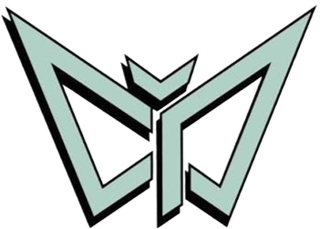

Punk rock de Buenos Aires. La banda que me hizo agarrar la guitarra en serio. Esta página la armé yo, como fan y como músico — no es el sitio oficial de la banda.
"El DIY del punk no es solo un sonido, es una forma de hacer las cosas sin pedir permiso."
Escribe aquí por qué esta banda te importa como músico: qué canción te hizo agarrar la guitarra, qué patch armarías en tu pedalera para sonar parecido a ellos, o qué aprendiste de su forma de tocar. Esta es la parte que nadie más en tu salón puede copiar — es tuya.